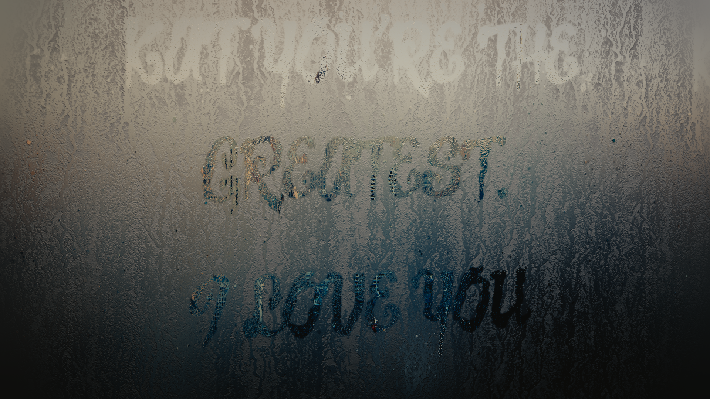

<body background="images/heart.jpg">
	<strong>
<center>
	<p>
		Hey baby girl :)
	</p>
	<p>
		I know I can't be with you on our first Valentine's Day.
	</p>
	<p>
		If I could be with you, I would snuggle with you. And lose you in cuddles. And shower you with kisses. 
	</p>
	<p>
		But most importantly, I would cradle you in my arms and sing softly to you. &#9829
	</p>
	<p>
		I may not be able to hold you...
	</p>
	<p>
		but I can still sing to you.
	</p>
	<audio controls>
		<!-- <source src="horse.ogg" type="audio/ogg"> -->
		<source src="friendinme.mp3" type="audio/mpeg">
		Your browser does not support the audio element.
	</audio>

	<p>You've got a friend in me...</p>
	<p>You've got a friend in me!</p>
	<p>When the road looks rough ahead</p>
	<p>And your and miles from yo nice warm bed...</p>
	<p>You just remember what your old pal said.</p>  
	<p>For you've got a friend in me :)</p>
	<P>You've got a friend in me.</P>
	<p>You've got a friend in me!</p>
	<p>You've got troubles...I've got em too!</p>
	<p>There isn't anything I wouldn't do for you.</p>
	<p>We stick together...see it through!</p>
	<p>Cause you've got a friend in me :)</p>

	<!-- </img> -->


</center>
</strong>
</body>
